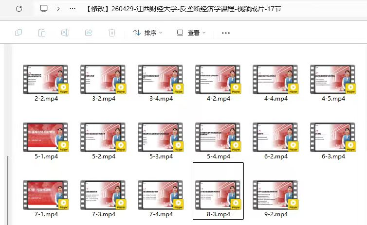
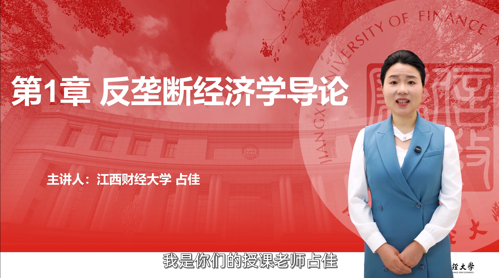

秋叶以生成式 AI 技术重构知识生产范式，
为江西财经大学经济学院打造《反垄断经济学》全景数字人慕课体系
开创 "技术 + 教育 + 内容" 三位一体的智慧课程新纪元


17 节系统化数字人慕课（2-2 至 9-2 章节全覆盖），以 AI 数字人形态呈现经济学前沿理论，突破传统录课对时空与人力的高度依赖，实现优质教学资源的标准化、规模化、永续化生产
项目交付
AI+
数字人慕课案例
▶ 解说
解说词
50/86